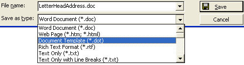
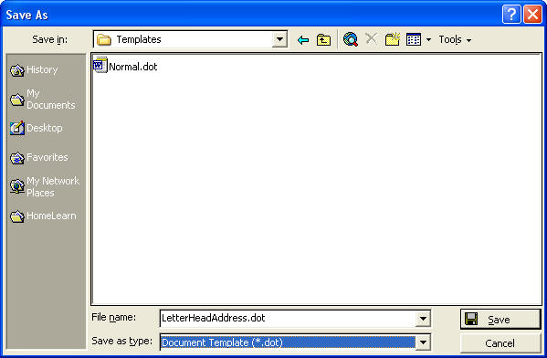
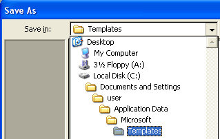
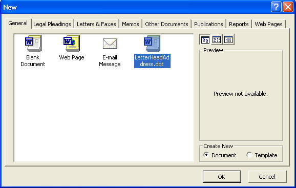
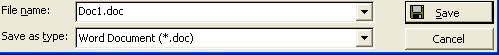

Free
computer Tutorials
|
Free
computer Tutorials
|
|
 home home |
|
||||
Create a Template in Microsoft WordIf you're going to use a document over and over again, it makes sense to turn that document into a template. A template in word processing terms is a document with some settings already in place. When you first open Microsoft Word it gives you a new document. This document is an in-built template. It will have its margins, and a whole lot of other settings, already prepared. All you have to do is start typing. This document is called "Normal.dot". The three letter extension tells you that it is a template. All templates end with the letters ".dot". You can turn your own documents into templates that have the three letter ".dot" extension. To turn a document into a template, do the following:
 Here, we've called our doucument LetterHeadAddress. But when you click on Document Template with your left mouse button, you are taken to the folder where Word stores all its templates. You can see a list of templates already set up, including the "Normal.dot" template. The image below shows the list of templates on this computer:  As you can see, there is only one template listed - Normal.dot. You may have more in yours. But take a look at where Microsoft Word will store your template:  If you have Windows XP, Word will store all your templates in this folder: C:\Documents and Settings\user\Application Data\Microsoft\Templates If you have W98 or WME, word will store all your templates in this folder on your computer: C:\Windows\Application Data\Microsoft\Templates But locations do vary. But don't worry: you don't have to search your entire computer to open your template! Word stores them in this folder for a reason. Which we'll see now. After you have set the "Save as type" box to Document Template, type in a name for your template. Then click the OK button. You document is now saved as a template. To open it up very quickly, do the following. Before you follow this, though, click File from the menu bar. From the drop down list click on Close. This will close the letterhead you had opened, but won't close down Microsoft Word. To open up your template, then, do this (Word 2000. The process is slightly diffeent for version of Word later than this):
 The crucial thing to notice here is that your letterhead has been added to the type of New documents that you can open. To open your document, click on whatever name you called your template. In the box above, LetterHeadAddress is the name of a document you can open. After you have clicked on your document, click the OK button. Your letterhead will open up in Microsoft Word. Once your letterhead is open, click on File > Save As again. Notice the Save as type box at the bottom.  It doesn't say Document Template(*.dot). It says Word Document(*.doc). In other words, when you come to save your letter, you will not be overwriting your document template. That template is safe, and you can open it up as many times as you want. What is being saved is just a Word document like any other Word document.
So now you know how to save documents as Templates, we'll move on to Mail Merge. This section will be just a little bit trickier, so hang on to your hats - it could be a bumpy ride! |
|||||
|